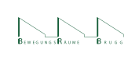
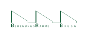

Helfer wanted!
07.06.2017Keine 60 Tage mehr und das kleinLaut Festival geht in die dritte Runde. Damit wir das schaffen, brauchen wir noch helfende Hände. Besonders für die Aufbauwoche vom 21.07 - 27.07 sind wir für jeden Hammerschwingenden froh. Wenn du interessiert bist, melde dich hier an.
 

Getränkepartner